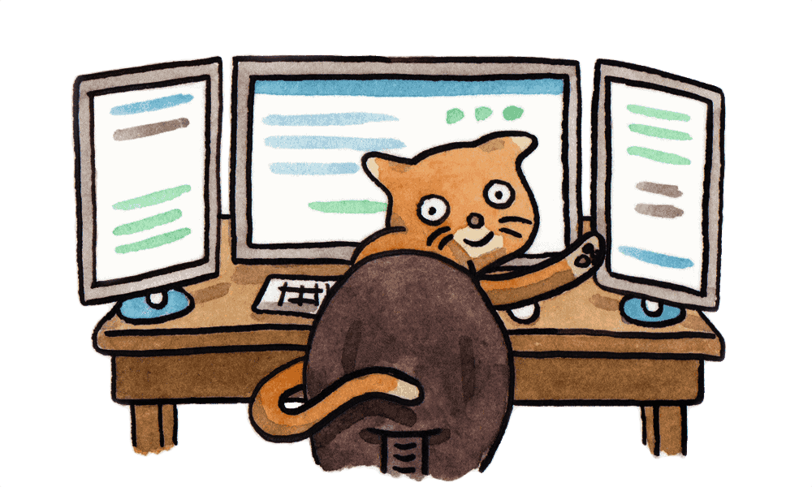

速度超快
Yarn 缓存了每个下载过的包，所以再次使用时无需重复下载。 同时利用并行下载以最大化资源利用率，因此安装速度更快。


超级安全
在执行代码之前，Yarn 会通过算法校验每个安装包的完整性。
超级可靠
使用详细、简洁的锁文件格式和明确的安装算法，Yarn 能够保证在不同系统上无差异的工作。

此文档针对的是Yam版本，对于Yam2+文档迁移指南，请访问yampkg.cn
Yarn 缓存了每个下载过的包，所以再次使用时无需重复下载。 同时利用并行下载以最大化资源利用率，因此安装速度更快。
在执行代码之前，Yarn 会通过算法校验每个安装包的完整性。
使用详细、简洁的锁文件格式和明确的安装算法，Yarn 能够保证在不同系统上无差异的工作。